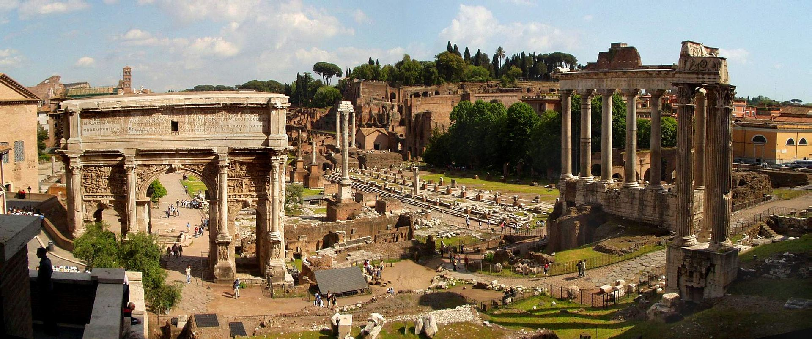
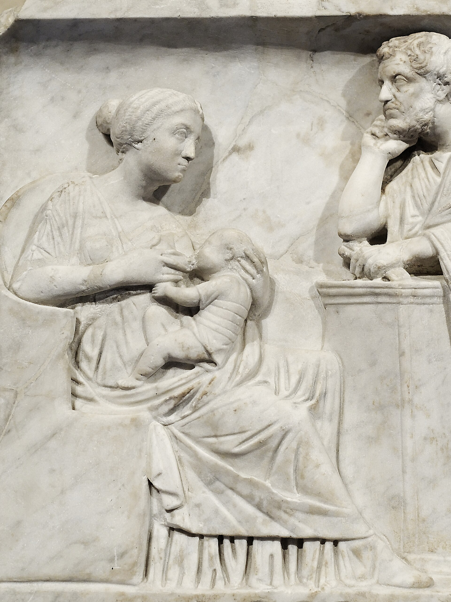
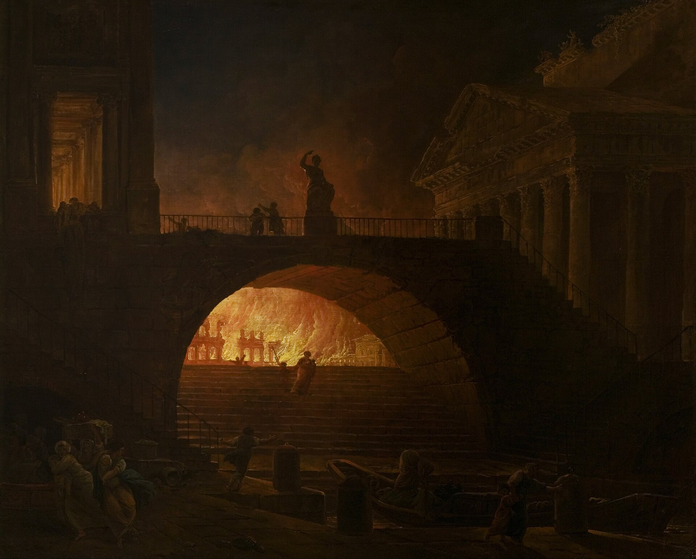
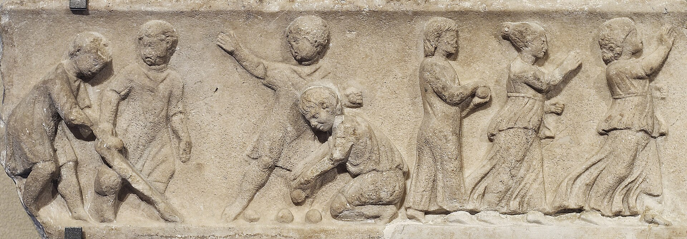

Petronia Iusta
Urban Plebeian Woman · Rome


You live in the densest, loudest, most cosmopolitan city in the ancient world: Rome, population roughly one million at its peak. You are poor, but not destitute. You live in an insula — a multi-story apartment block — in the Subura, the teeming commercial-and-residential neighborhood between the Esquiline and Viminal hills.

Childhood. Your father, Gaius Petronius, was a freedman — a former slave manumitted by a patron of the Petronia gens. He worked as a baker's assistant near the Forum Boarium. Your mother, Prima, was freeborn but from a poor family. You grew up in a two-room apartment on the fourth floor of an insula. The building swayed in the wind. Water had to be carried up from the ground-floor fountain. There was no heat except a charcoal brazier, no toilet except a chamber pot emptied into the street or carried to a public latrine. You had two brothers: one survived, one died of a childhood illness.

Education and skills. You received no formal education, but you learned basic numeracy from helping your father in the bakery, and you picked up rough kitchen Latin, some market Greek, and enough literacy to read shop signs and public notices. You could not write.

The Great Fire and its aftermath. You were nine when the Great Fire of 64 AD swept through Rome. The Subura was not in the direct path of the worst destruction, but the fire's aftermath reshaped the city around you. Nero's rebuilding regulations mandated wider streets and fireproof materials for new construction, and the construction of the Domus Aurea displaced thousands. Your family's insula survived but the neighborhood was in turmoil for years. Rents rose. Your father moved the family to a cheaper building further from the center.

Marriage and work. You married at sixteen, to a freeborn craftsman named Lucius who made clay oil lamps in a small workshop near the Porticus Aemilia. Oil lamps were a major industry in Rome — millions survive archaeologically. Your dowry was negligible. You worked alongside Lucius in the shop, painting decorations on lamps, and you supplemented the household income by spinning wool and selling it to fullers. You also received the grain dole (frumentatio) — free grain distributed monthly to Roman citizens, a lifeline for the urban poor.

Children. You had four children. The first, a boy, died at two days old. A daughter survived. A second son survived. A third pregnancy ended in a stillbirth attended by a neighborhood midwife. Childhood mortality in the city of Rome was likely even worse than rural areas — overcrowding, contaminated water from lead pipes, and epidemic disease made the Subura a demographic sink.

The Year of Four Emperors and the Flavians. In 69 AD, you were fourteen and watched the civil war's finale play out in the streets: Vitellius's forces clashed with Vespasian's in Rome itself, and the Capitol was burned. The neighborhood was terrified; shops closed; there was looting. Under the Flavians (69–96 AD), the city stabilized. Vespasian began the Colosseum — you watched it rise from the site of Nero's drained lake. You attended the inaugural games in 80 AD under Titus. You saw executions, animal hunts, and gladiatorial combat. Admission was free.

Daily life in the Flavian–Trajanic era. Your days: wake at dawn, carry water, buy bread (or bake it from dole grain), work in the lamp shop, visit the baths in the afternoon (the Baths of Titus, then later Trajan's), shop at the macellum (market), cook on the brazier, sleep. Entertainment: public festivals (over 130 days of public games per year by the second century), street performers, tavern dice games. Dangers: building collapse (insulae fell regularly — Juvenal writes about it), fire, mugging, epidemic disease, flooding when the Tiber overran its banks.

Death. Lucius died around 104 AD after a slow decline — possibly lead poisoning, an occupational hazard for craftsmen. You lived with your surviving daughter and her husband for your final years. You died around 112 AD, during Trajan's reign, likely the most stable and prosperous period of the empire. You were buried in a simple grave outside the city walls on the Via Ostiensis, in a communal plot.
What shaped this life
The grain dole, the insula housing economy, urban craft production, the sheer density and danger of Rome itself, and the political turmoil that periodically erupted in the streets of a million-person city.
- Subura
- Insula (building)
- Cura Annonae (the grain dole)
- Great Fire of Rome (64 AD)
- Year of the Four Emperors
The images above are real museum artifacts and photographs, or commissioned illustrations; full attribution on the credits page.